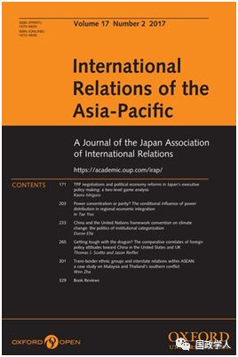
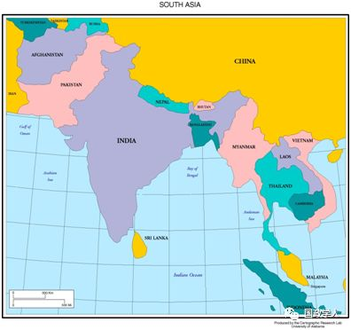

收录于合集

简 介
** 【作者】** DarrenJ. Lim, 澳大利亚国立大学人文与社会科学学院; Rohan Mukherjee，耶鲁-新加坡国立大学学院
**【 编译】**袁浩延
【审校】 陈成龙、高嘉琳
** **【 来源 】****InternationalRelations of the Asia-Pacific Volume 0, (2019) 1–30
** 【期刊】** ** I** nternationalRelations of Asia- Pacific，成立于2001年，由牛津大学出版社代表日本国际关系协会出版，每年1月、5月和9月出版三次。该期刊的关注点是亚太地区的国际政治动态，包括中国政治，美国在亚太地区的地位，地区治理，日本对外关系，亚洲与国际关系理论，中国的全球化道路以及中国的国家认同。2014年其影响因子为0.758，2018年上升至0.906。

南亚对冲： 中印竞争中经济和安全利益的平衡
Hedgingin South Asia: balancing economic and security interests amid Sino- Indiancompetition

内容提要
关于对冲作为次要国家（secondary states）的一种战略的问题，以往的文献 侧重于阐释一个大国既提供次要国家经济机会，又对其构成安全威胁的情况 ，这主要基于美国与中国在东亚和东南亚的竞争。然而，面临印度和中国战略竞争的南亚次要国家在安全威胁缺位的情况下仍采取了对冲策略。我们对这两种现象进行了理论上的调和。 对冲的核心是与一个大国在竞争环境中合作，同时在物质利益和自主成本之间进行权衡。当收益和成本同时上升时，国家可能会采取对冲战略。 我们在马尔代夫和斯里兰卡的案例中检验了这一理论的合理性。自主性取舍既可以在没有安全威胁的情况下进行，也可以于存在安全威胁的情况下进行，从而作出了具有更大经验范围的理论进步。
文章导读
现有的关于次要国家采取“对冲”战略的文献几乎完全集中在 东南亚和东北亚 。这是有道理的，因为最 初的“对冲”概念是为了捕捉两个地区大国之间的动态局 势，但对它们来说，平衡和捆绑的传统安全战略在理论上既不是最优的，在经验上也并未被观察到。大多数东亚国家于21世纪在对美、对华关系中都面临着这样的困境。
我们的研究得出了两个核心结论。首先，从 描述性的意义上讲，中国在马尔代夫和斯里兰卡这两个南亚国家经济参与的特点是资本流动占主导地位 ，特别是通过对 大型基础设施项目的投资 来实现。受援国政府反过来做出了某些政策选择，这些政策选择相对来说更符合北京方面的利益。其次， 这两个案例都证实了一种可识别变体（identifiable version）对冲的合理性。 ****南亚国家没有与中国对立的核心安全利益，这一事实确实允许它们在不明显损害国家安全的情况下接受中国的投资。然而，在这两个国家内部都出现了政策自主权受到损害的问题，这既源于国内政治因素，也源于印度制衡的影响，这改变了政府在自主取舍方面的决策思路，并加强了对冲的动机。
1
** ** 理论框架：安全威胁缺位情况下的对冲
对冲的概念在安全研究中仍然存在争议，即使在那些侧重于次要国家战略选择的文献中也是如此。学术界主流将对冲描述为一种 安全策略 ，它 将政策领域内外的混合/冲突的政策选择捆绑在一起，作为避免纯粹的平衡或捆绑行为的一种方式 。更狭隘的视角将对冲描述为一种 安全联盟形式 ，在程度上 有限或模棱两可，与区域大国进行联合(或区域大国之间相互联合） 。然而，在这两种概念中，对冲的 动机是一种实际或潜在的不确定威胁，使传统的平衡政策的代价最终令人无法接受。 ****
我们的模型与现有的次要国家对冲战略研究有两种不同之处。首先，我们 对潜在对冲国家所面临的权衡进行概念化，使之比传统概念——基于军事的潜在安全威胁所造成的不确定性和风险——更广泛 。通过将重点放在 政策自主权 上，我们能够涵盖更广泛的国家间关系，并涵盖武装冲突不是重大关切、对冲不仅仅是管理风险问题的情况。第二，我们认为 经济相互依存不仅是一种普遍的积极现象，而且是丧失政策自主权并为此付出重大代价的根源 。从这个角度看，对冲不仅仅是次要国家可能对大国竞争做出的一种反应，而且是一种微妙调和——调 和与一个大国进行双边合作的固有权衡 。
本文的普适性案例有哪些呢？南亚由阿富汗、孟加拉国、不丹、马尔代夫、尼泊尔、印度、巴基斯坦和斯里兰卡这八个国家组成。在这八个国家中，我们排除了作为该区域的竞争性崛起大国和主要战略行为体的印度，同时排除了阿富汗，因为后者长期处于国内安全不稳定状态。考虑到一篇文章无法研究所有其他六个国家，我们选择了 马尔代夫和斯里兰卡 这两个我们认为“最有可能”（选择对冲）的案例，这是因为近年来两国接受中国投资十分显著、宣传高调，以及这两个国家相似的海洋位置和战略价值。这使它们成为在没有直接安全威胁的情况下探索我们的对冲理论是否合理的理想选择。
**2
** ** 论据：南亚次要国家处理大国关系 **
我们的理论框架的核心是这样一种观点， 即与大国的接触会给次要国家带来安全和经济利益，但也会付出丧失部分自主权的代价 。在这一实证部分，我们考虑马尔代夫和斯里兰卡在过去十年中选择更多地与中国接触的好处，以及这些好处是否和如何伴随着对决策自主权的威胁
对全球几乎所有国家来说，加强与中国的接触建立在迅速发展的经济联系的基础上，南亚也不例外。然而，与东亚相比，中国与南亚国家的商品贸易关系并不具有同等的不对称性。中国主要通过资本领域——无论是外国直接投资(FDI)、外国援助(官方发展援助)还是发行外债——扩大与该区域的双边经济接触。中国政府一直在增加发展融资，首先是通过其政策性银行进行双边融资，最近又通过其标志性的亚洲基础设施投资银行和一带一路计划进行融资。在整个过程中，各国政府累计欠下了中国数十亿美元的利息。从战略的角度来看，北京正利用其可观的财政资源支持其在塑造地区秩序和国际体系方面寻求发挥更大的领导作用。问题是中国的经济利益在多大程度上限制了每个国家的决策自主权。
** （一）马尔代夫**
马尔代夫位于印度洋主要航道上(进出亚洲的贸易80%以上通过马尔代夫领土)，人口在45万以下，最著名的是其主要产业——高端旅游业，其与中国的经济往来主要是通过旅游业进行的。然而， 作为一个小国，马尔代夫表现出相当复杂的政治动态，这不可避免地会使马尔代夫对中国的参与和印度的制衡性影响进行分析，从而影响其自主性权衡取舍。 ****
也许最能体现利益和敏感性的微妙组合的例子是马尔代夫立法机构在2015年7月决定修订国家宪法，允许土地外国所有。 从表面上看，这似乎证实了人们的担忧，即中国日益增长的影响力正在给印度带来显著的战略成本。此前几年，一直有传言称，中国正寻求收购或控制土地，以便建立一个军事基地，作为其“珍珠串”海上战略的关键要素。宪法修正案似乎是促进这一进程的决定性举措。一位反对派议员断言，“这将使这个国家成为中国的殖民地”。然而，在接下来的几周里，马尔试图安抚德里的担忧。8月，马尔代夫总统亚明致信印度，称马尔代夫不允许中国建立军事基地，次月，亚明称赞印度“至关重要”的援助；随着印度外长10月份的访问，双方的国防和经济联系将进一步加强。亚明总统甚至说马尔代夫有“印度优先”的政策。与此同时，马尔代夫收到印度提出的一个长期有效的提议，专门开发一个地点作为转运港口，据报道中国早些时候也对此感兴趣。
宪法修正案事件表明， 虽然马尔代夫对中国加强存在的前景感到放心，但政府认识到其自主性受到限制，因为给北京带来重大战略利益的政策让步将会招致来自德里的反制 措施。因此，马尔代夫政府通过对印度频繁展现姿态来寻求保持其自主性。
总体而言，马尔代夫的做法代表了 一系列混合/冲突的政策选择。 因此，尽管没有安全威胁，但却完全符合对冲的定义 。2011年，时任外交部长艾哈迈德·纳西姆(Ahmed Naseem)在接受采访时表示：“我们对印度和中国的竞争有一个简单的解决方案。我们从不秘密地做任何事。在任何人私下告诉中国人任何事情之前，我们让印度人知道我们与中国的计划”。 这种开放的战略，以及巧妙地处理德里的敏感性，似乎允许马尔代夫大幅增加其对中国的外债，同时避免印度对战略格局过于不满，防止德里采取更有力的行动。
** （二）斯里兰卡**
和马尔代夫一样，斯里兰卡也采取了对冲策略， 尽管其国内因素与印度因素相比在提高与中国合作的自主性成本方面发挥了更大的作用。 ****就与中国的经济往来而言，斯里兰卡可能是南亚次要国家中走得最远的。 虽然中国没有主导该国的商品贸易，但北京已经向斯里兰卡全国各地的各种基础设施项目投入了数十亿美元。斯里兰卡前总理马欣达·拉贾帕克萨(Mahinda Rajapaksa，2005-15)领导的斯里兰卡政府发现，接受来自中国的投资是一个特别有吸引力的提议。
斯里兰卡的血腥内战结束后，中国是斯里兰卡内战战后重建工作进程中唯一向拉贾帕克萨提供财政援助的国家。 不干涉原则 和“ 不提问题 ”（ no questions-asked approach） 的方式支撑了中国的经济外交，对于科伦坡来说，在需要的时候，这是一个受欢迎的资金来源和合法性来源。中国投资的这些方面也很适合斯里兰卡的政治经济形势。2015年接替拉贾帕克萨的政府披露，拉贾帕克萨和他的家人参与了一些有问题的交易，这最终导致对其政权的贿赂和腐败问题进行了全面调查。
由于不利的条款和糟糕的生存能力，中国在斯里兰卡的大额投资的主要结果是使已经承受国际收支压力的斯里兰卡政府进一步负债。 ****2015年初，政府所欠外债达422亿美元，约占GDP的55%。 利息支付消耗了政府收入的35%，尽管对中国利息的债务只占总负担的10%左右，但高额的总体债务给了北京债务减免的财务杠杆，使这些债务能够转化为具有更大战略优势的资产。2017年12月，政府实际上将汉班托塔港移交给了中国利益集团(通过99年的租约)，所得主要用于偿还债务。
斯里兰卡表面上已经失去了对一个具有战略位置的大型港口的控制，其未来的政策自主权显然受到了限制。 然而，这一成本并不是通过不对称相互依存而产生的胁迫或影响，而是由于糟糕的投资决策造成了不可持续的债务负担。 然而， 继续与中国接触的自主性成本是巨大的，并且由于国内对中国所谓的斯里兰卡“殖民化”的政治反弹而加剧。 ****这一点在2015年初的大选中表现得最为突出，在那次大选中，拉贾帕克萨的前同事梅特里帕拉·西里塞纳(MaithripalaSirisena)凭借一个反腐平台上台执政，该平台直接关注拉贾帕克萨政府及其与中国公司的交易。 随后，针对为中国公司开发工业区的计划，汉班托塔爆发了暴力抗议。实施该计划将需要重新安置现有社区。
除了不断上升的自主性成本外，还有区域大国印度的反应 。几十年来，德里在斯里兰卡的外交政策考量中发挥了重要作用，两国泰米尔人之间的民族纽带将他们的命运联系在一起。1987年的“印度–斯里兰卡协议”源于印度对斯里兰卡内战的干预——包括在1987年至1990年间派遣印度军队——并正式将斯里兰卡置于印度的战略轨道之内。斯里兰卡少数民族泰米尔人的福利是印度国内政治中一个高度敏感的问题，这增加了德里在该国利益的深度。两国不仅拥有共同的文化历史，而且有着中国迄今无法比拟的紧密经济联系。
因此，上述不断上升的成本为斯里兰卡的对冲行为创造了条件。 ****与这一理论预测相一致的是，科伦坡有时会推行不利于中国利益的政策。 为了回应印度的压力，拉贾帕克萨政府放弃了在亭可马里建设一个中国飞机小型维修基地的计划。2015年西里塞纳在总统选举中获胜后，新政府宣布对上届政府批准的一些大型项目进行调查，这也表明斯里兰卡希望通过重新谈判贷款条款来减少其对中国的财务依赖。
当然，斯里兰卡财政状况的现实限制了西里塞纳政府贯彻其最初对中国的怀疑态度。 面对如此沉重的债务负担，政府别无选择，只能与最大的债权人保持积极的关系，并就之前的汉班托塔港租赁进行交易 。尽管如此，选举和科伦坡的态度改变表明斯里兰卡接受大规模金融投资所附带的自主性成本。这使得政府面临与两个大国接触的强大动力，从而为对冲行为创造基础。用西里塞纳政府的第一任外交部长曼加拉·萨马拉维拉的话来说， ** 对冲就是一种“全方位的外交政策”** 。
**3
** 分析与结论
我们旨在通过发展一种理论模型来扩展关于次要国家对冲的文献，在该模型中，国家不会在直接而不确定的安全威胁下进行对冲， 是因为与主要大国在安全和经济领域的合作需要政策让步，这些让步可能会以令人无法接受的方式损害次要国家的决策自主权。 ****我们的核心论点是， 当这些国家面临合作带来的收益增加和失去自主性的成本上升时，它们会进行对冲 。自主性权衡的出现要么是因为 合作大国要求政策让步，国内政治因素使政治领导人更难继续合作 ，要么是因为 第三方大国为了维护自己的利益而对合作大国进行干预。 ****
在 ** 后冷战时代** ，人们通常在 东亚 的背景下研究对冲，即 当各种力量以及相关的不确定性和风险将它们拉向相反的方向时，较小的国家为维持微妙的平衡所做的努力 。我们似是而非的调查表明， 南亚 存在其他力量，它们在努力维持平衡方面产生了类似的结果。在东亚、南亚这两个地区，对冲都描述了此种 ** 平衡行为** ，其 作为一个概念的价值来源于理解产生这些对立力量的因果机制，因为这将揭示出地区稳定和权力过渡随着中国和印度日益增长的实力和影响力向对方战略后院扩散的变化。
_ ** _ 本文由国政学人平台独家编译推荐**
更多阅读
【重磅速递】约瑟夫·奈：美国霸权的兴衰：从威尔逊到特朗普 | 国政学人
【重磅推荐】巴里·布赞：英国学派视角下的中国崛起 | 国政学人
【重磅速递】米尔斯海默：注定失败：自由主义国际秩序的兴衰 | 国政学人
【百年国关】历史在国际社会中的应用：从巴黎和会到现在 | 国政学人
【国际组织】IO杂志：联合国维和行动的武力运用问题研究 | 国政学人
【国际秩序】为什么自由主义国际秩序理念将美国外交政策引入歧途？| 国政学人
【关系理论】“关系”：世界政治关系理论的中国话语 | 国政学人
【英国学派】张勇进：中国与全球国际社会中的自由主义等级制：实力与对规范变迁的协商 | 国政学人
【地区秩序】论经济实力的可转化性：中国经济崛起与东亚安全秩序 | 国政学人
【中俄关系】不得已的伙伴：系统-单元动态与中俄关系 | 国政学人
【IPE研究】美国对外贸易政策的“1934年体制”是如何形成的？| 国政学人
【现实主义】斯蒂芬·沃尔特：傲慢的终结与美国克制的新时代 | 国政学人
【理论批判】系统、层次与结构理论：沃尔兹的理论并非系统理论 | 国政学人
【外交政策】单极体系下的不和平状态与美国外交政策 | 国政学人
【欧洲研究】资本主义多样性与合规：加入欧盟后中东欧的经济改革 | 国政学人
【理论研究】吴建树：权力、道德、均势、联盟与摩根索——汉斯·摩根索的经典现实主义思想再解读
【友谊国关】将友谊重新引入国际关系：从中国到西方的关系本体论
【定量研究】政党实力和经济增长（Party Strength and Economic Growth）| 国政学人